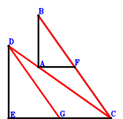
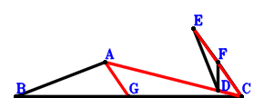
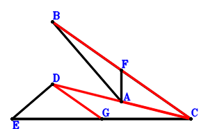
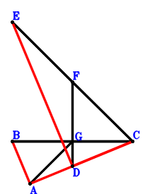

Exercise 3： Let G, F be the midpoints of EC, BC, respectively. AF//EC and BA//DE. \(AF·EC=BA·DE\). Given that D, A, C are collinear and BC//DG, prove that \(BC·DG=AC·DC\).

\(\because \) F is the midpoint of BC \(\therefore \small\overrightarrow{CF}=\dfrac{\small\overrightarrow{CB}}{2}\).\(\because \) G is the midpoint of EC \(\therefore \small\overrightarrow{CG}=\dfrac{\small\overrightarrow{CE}}{2}\).\(\because \) AF//EC and BA//DE. \(AF·EC=BA·DE\) \( \therefore\small\overrightarrow{AB} \cdot \small\overrightarrow{ED} - \small\overrightarrow{AF} \cdot \small\overrightarrow{EC}=\small\overrightarrow{CE} \cdot \left(- \small\overrightarrow{CA} + \small\overrightarrow{CF}\right) + \left(- \small\overrightarrow{CA} + \small\overrightarrow{CB}\right) \cdot \left(\small\overrightarrow{CD} - \small\overrightarrow{CE}\right)=\small\overrightarrow{CE} \cdot \left(- \small\overrightarrow{CA} + \dfrac{\small\overrightarrow{CB}}{2}\right) + \left(- \small\overrightarrow{CA} + \small\overrightarrow{CB}\right) \cdot \left(\small\overrightarrow{CD} - \small\overrightarrow{CE}\right)=- \small\overrightarrow{CA} \cdot \small\overrightarrow{CD} + \small\overrightarrow{CB} \cdot \small\overrightarrow{CD} - \dfrac{\small\overrightarrow{CB} \cdot \small\overrightarrow{CE}}{2}=0.\)In conclusion, \(\small\overrightarrow{AC} \cdot \small\overrightarrow{DC} + \small\overrightarrow{BC} \cdot \small\overrightarrow{GD}=\small\overrightarrow{CA} \cdot \small\overrightarrow{CD} - \small\overrightarrow{CB} \cdot \left(\small\overrightarrow{CD} - \small\overrightarrow{CG}\right)=\small\overrightarrow{CA} \cdot \small\overrightarrow{CD} - \small\overrightarrow{CB} \cdot \left(\small\overrightarrow{CD} - \dfrac{\small\overrightarrow{CE}}{2}\right)=\small\overrightarrow{CA} \cdot \small\overrightarrow{CD} - \small\overrightarrow{CB} \cdot \small\overrightarrow{CD} + \dfrac{\small\overrightarrow{CB} \cdot \small\overrightarrow{CE}}{2}=0\)\(\because\) D, A, C are collinear and BC//DG \(\therefore\) \(BC·DG=AC·DC\).
Exercise 4： Let G, F be the midpoints of BC, EC, respectively. BA⊥ED and BC⊥FD. Given that A, D, C are collinear and AG//EC, prove that \(AG·EC=AC·DC\).

\(\because \) F is the midpoint of EC \(\therefore \small\overrightarrow{CF}=\dfrac{\small\overrightarrow{CE}}{2}\).\(\because \) G is the midpoint of BC \(\therefore \small\overrightarrow{CG}=\dfrac{\small\overrightarrow{CB}}{2}\).\(\because \) BC⊥FD \(\therefore \small\overrightarrow{BC} \cdot \small\overrightarrow{FD}=- \small\overrightarrow{CB} \cdot \left(\small\overrightarrow{CD} - \small\overrightarrow{CF}\right)=- \small\overrightarrow{CB} \cdot \left(\small\overrightarrow{CD} - \dfrac{\small\overrightarrow{CE}}{2}\right)=- \small\overrightarrow{CB} \cdot \small\overrightarrow{CD} + \dfrac{\small\overrightarrow{CB} \cdot \small\overrightarrow{CE}}{2}=0\) . . . . . . \(①\)\(\because \) BA⊥ED \(\therefore \small\overrightarrow{AB} \cdot \small\overrightarrow{ED}=\left(- \small\overrightarrow{CA} + \small\overrightarrow{CB}\right) \cdot \left(\small\overrightarrow{CD} - \small\overrightarrow{CE}\right)=- \small\overrightarrow{CA} \cdot \small\overrightarrow{CD} + \small\overrightarrow{CA} \cdot \small\overrightarrow{CE} + \small\overrightarrow{CB} \cdot \small\overrightarrow{CD} - \small\overrightarrow{CB} \cdot \small\overrightarrow{CE}=0\) . . . . . . \(②\)In conclusion, \(\small\overrightarrow{AC} \cdot \small\overrightarrow{DC} - \small\overrightarrow{AG} \cdot \small\overrightarrow{EC}=\small\overrightarrow{CA} \cdot \small\overrightarrow{CD} + \small\overrightarrow{CE} \cdot \left(- \small\overrightarrow{CA} + \small\overrightarrow{CG}\right)=\small\overrightarrow{CA} \cdot \small\overrightarrow{CD} + \small\overrightarrow{CE} \cdot \left(- \small\overrightarrow{CA} + \dfrac{\small\overrightarrow{CB}}{2}\right)=\small\overrightarrow{CA} \cdot \small\overrightarrow{CD} - \small\overrightarrow{CA} \cdot \small\overrightarrow{CE} + \dfrac{\small\overrightarrow{CB} \cdot \small\overrightarrow{CE}}{2}=-①-②=0\)\(\because\) A, D, C are collinear and AG//EC \(\therefore\) \(AG·EC=AC·DC\).
Exercise 5： Let G, F be the midpoints of EC, CB, respectively. AB⊥ED and AC⊥CD. Given that AF//EC and CB//DG, prove that \(AF·EC=CB·DG\).
Exercise 6： Let G, F be the midpoints of EC, BC, respectively. BA⊥ED and FA⊥EC. Given that D, A, C are collinear and BC//DG, prove that \(BC·DG=AC·DC\).

\(\because \) F is the midpoint of BC \(\therefore \small\overrightarrow{CF}=\dfrac{\small\overrightarrow{CB}}{2}\).\(\because \) G is the midpoint of EC \(\therefore \small\overrightarrow{CG}=\dfrac{\small\overrightarrow{CE}}{2}\).\(\because \) BA⊥ED \(\therefore \small\overrightarrow{AB} \cdot \small\overrightarrow{ED}=\left(- \small\overrightarrow{CA} + \small\overrightarrow{CB}\right) \cdot \left(\small\overrightarrow{CD} - \small\overrightarrow{CE}\right)=- \small\overrightarrow{CA} \cdot \small\overrightarrow{CD} + \small\overrightarrow{CA} \cdot \small\overrightarrow{CE} + \small\overrightarrow{CB} \cdot \small\overrightarrow{CD} - \small\overrightarrow{CB} \cdot \small\overrightarrow{CE}=0\) . . . . . . \(①\)\(\because \) FA⊥EC \(\therefore \small\overrightarrow{AF} \cdot \small\overrightarrow{EC}=- \small\overrightarrow{CE} \cdot \left(- \small\overrightarrow{CA} + \small\overrightarrow{CF}\right)=- \small\overrightarrow{CE} \cdot \left(- \small\overrightarrow{CA} + \dfrac{\small\overrightarrow{CB}}{2}\right)=\small\overrightarrow{CA} \cdot \small\overrightarrow{CE} - \dfrac{\small\overrightarrow{CB} \cdot \small\overrightarrow{CE}}{2}=0\) . . . . . . \(②\)In conclusion, \(\small\overrightarrow{AC} \cdot \small\overrightarrow{DC} + \small\overrightarrow{BC} \cdot \small\overrightarrow{GD}=\small\overrightarrow{CA} \cdot \small\overrightarrow{CD} - \small\overrightarrow{CB} \cdot \left(\small\overrightarrow{CD} - \small\overrightarrow{CG}\right)=\small\overrightarrow{CA} \cdot \small\overrightarrow{CD} - \small\overrightarrow{CB} \cdot \left(\small\overrightarrow{CD} - \dfrac{\small\overrightarrow{CE}}{2}\right)=\small\overrightarrow{CA} \cdot \small\overrightarrow{CD} - \small\overrightarrow{CB} \cdot \small\overrightarrow{CD} + \dfrac{\small\overrightarrow{CB} \cdot \small\overrightarrow{CE}}{2}=-①+②=0\)\(\because\) D, A, C are collinear and BC//DG \(\therefore\) \(BC·DG=AC·DC\).
Exercise 7： Let G, F be the midpoints of BC, EC, respectively. BC⊥FD and AC⊥CD. Given that AG//EC and AB//ED, prove that \(AG·EC=AB·ED\).
Exercise 8： Let G, F be the midpoints of BC, EC, respectively. BC⊥FD and AG⊥EC. Given that A, D, C are collinear and BA//ED, prove that \(BA·ED=AC·DC\).

\(\because \) F is the midpoint of EC \(\therefore \small\overrightarrow{CF}=\dfrac{\small\overrightarrow{CE}}{2}\).\(\because \) G is the midpoint of BC \(\therefore \small\overrightarrow{CG}=\dfrac{\small\overrightarrow{CB}}{2}\).\(\because \) BC⊥FD \(\therefore \small\overrightarrow{BC} \cdot \small\overrightarrow{FD}=- \small\overrightarrow{CB} \cdot \left(\small\overrightarrow{CD} - \small\overrightarrow{CF}\right)=- \small\overrightarrow{CB} \cdot \left(\small\overrightarrow{CD} - \dfrac{\small\overrightarrow{CE}}{2}\right)=- \small\overrightarrow{CB} \cdot \small\overrightarrow{CD} + \dfrac{\small\overrightarrow{CB} \cdot \small\overrightarrow{CE}}{2}=0\) . . . . . . \(①\)\(\because \) AG⊥EC \(\therefore \small\overrightarrow{AG} \cdot \small\overrightarrow{EC}=- \small\overrightarrow{CE} \cdot \left(- \small\overrightarrow{CA} + \small\overrightarrow{CG}\right)=- \small\overrightarrow{CE} \cdot \left(- \small\overrightarrow{CA} + \dfrac{\small\overrightarrow{CB}}{2}\right)=\small\overrightarrow{CA} \cdot \small\overrightarrow{CE} - \dfrac{\small\overrightarrow{CB} \cdot \small\overrightarrow{CE}}{2}=0\) . . . . . . \(②\)In conclusion, \(\small\overrightarrow{AB} \cdot \small\overrightarrow{ED} + \small\overrightarrow{AC} \cdot \small\overrightarrow{DC}=\small\overrightarrow{CA} \cdot \small\overrightarrow{CD} + \left(- \small\overrightarrow{CA} + \small\overrightarrow{CB}\right) \cdot \left(\small\overrightarrow{CD} - \small\overrightarrow{CE}\right)=\small\overrightarrow{CA} \cdot \small\overrightarrow{CE} + \small\overrightarrow{CB} \cdot \small\overrightarrow{CD} - \small\overrightarrow{CB} \cdot \small\overrightarrow{CE}=-①+②=0\)\(\because\) A, D, C are collinear and BA//ED \(\therefore\) \(BA·ED=AC·DC\).
Exercise 10： Let F, G be the midpoints of EC, BC, respectively. BC⊥FD, AB⊥ED and AC⊥CD. Prove that AG⊥EC.